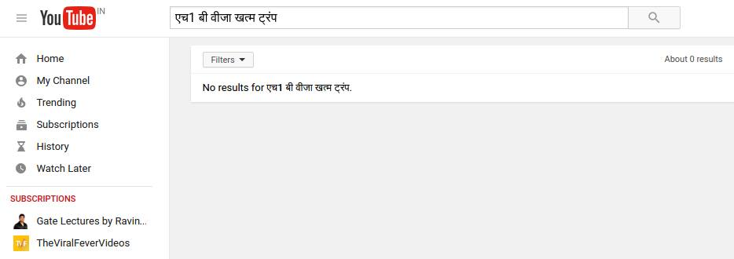
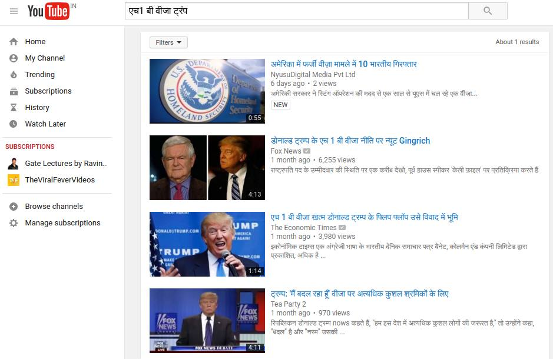

The aim of the project is to extract videos related to a news article from YouTube. The videos can be directly uploaded by the news publisher or a user sharing the video about that event. The news article will be given in JSON format. It is done for both Hindi and English news articles.
The solution we have come up with is "Data Extraction from News Article -> Queries formation -> YouTube Video Extraction based upon generated queries -> Ranking the extracted videos"
How it works
Initially we do the Pre processing and the Data Exrtraction. It id followed by Query Formation, Video Extraction and ranking the result.
Data Extraction :
Textblob api is used to extract the following data from the text of the news article : Noun Phrases, Sentiment Analysis, Synsets
Steps taken for query formation :
Getting the title as the base query. Creating inverted index of the text data. Retaining the terms in the title with higher idf value in the text and removing the ones with lower value. A phrase being considered as a single term.Creating multiple queries using n-grams. Fusing the formed queries with synsets if relevant result not found.
Video Extraction :
All the queries formed in the previous step are used to search the YouTube and the urls of all the resulting videos are stored.Titles are extracted from the video urls using lxml library. Thumbnails of the videos are extracted by parsing the search result page.
Ranking the videos :
The extracted videos were ranked using the following algorithm :
1. A rank value of the video is computed by finding the similarity between the query term and the title of the video.
2. Noun terms in title are given more weightage.
3. Adding static values to videos from trusted sources.
4. Titles of videos in Hindi are given more priority than English ones if the news article is in Hindi.
Examples
 Image showing problems when youtube searched with the whole title
 One of the n-gram generated query giving relevant result
Problems Faced
1. Proper Phrase Identification. Since some terms were non-uniformly broken.
2. Optimizing the search to reduce the time was a major challenge.
3. Proper query formulation for Hindi was also a major task and challenge.
Drawbacks of the System
Given a title and text, if the text in hindi is not consistent while writing, it will not fetch a proper result.
Example: if Title is : एच1 बी वीजा
And the text has the word: एच1बी
These words become different and it would not be fetched as important word, or a noun.
Future Scope
1.Can be more optimized.
2.Can be extended to other languages as well.
3.Semantic meaning can be extracted which can be applied on scholarly articles.
4.Videos from other websites can also be included.